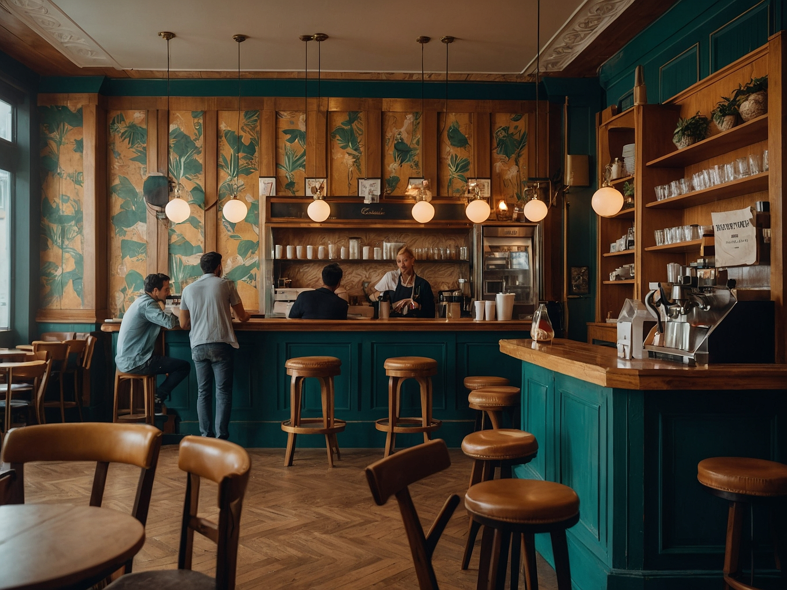
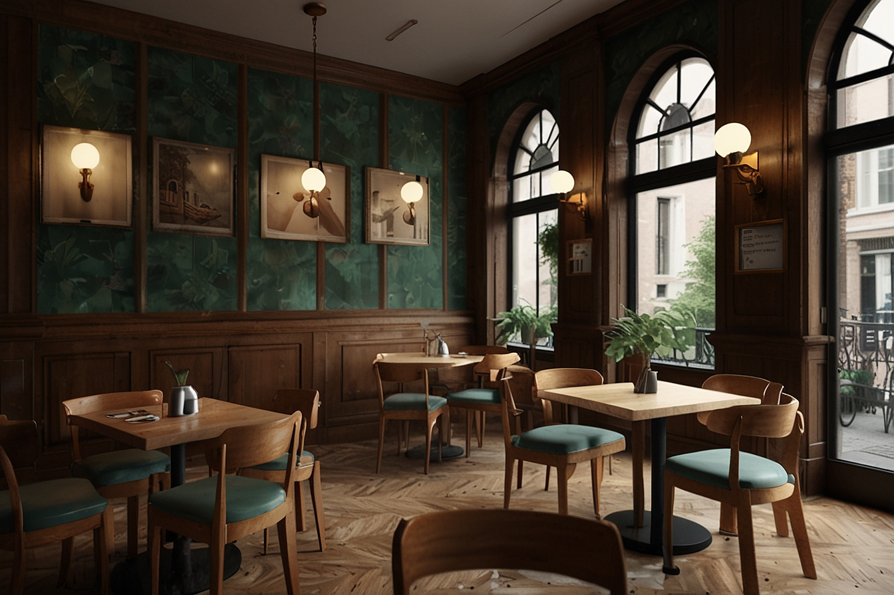
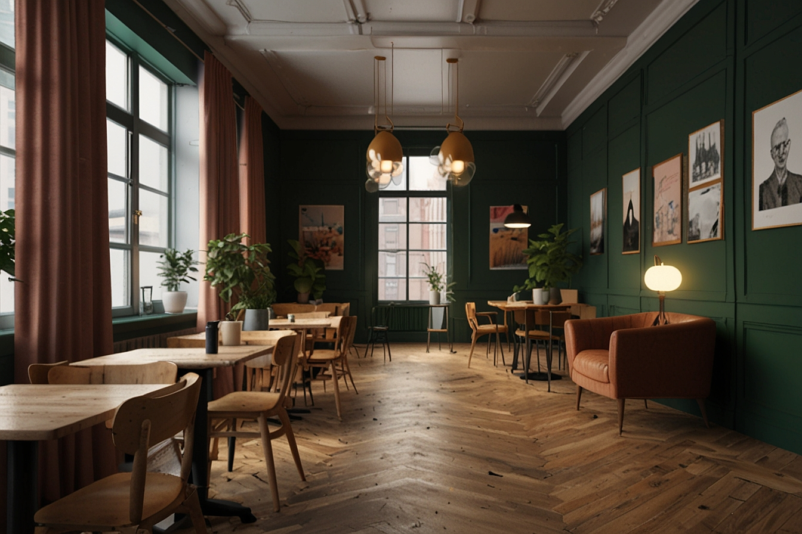

Bem vindo ao Tia Rosa Coffee Shops
O Tia Rosa Coffee Shop, fundado em 1989 na cidade de Brasília, Distrito Federal, é um lugar especial para os amantes de café. Com uma variedade de bebidas, como macchiato, cappuccino e latte, o café é um verdadeiro tesouro para os sentidos. Além disso, o Tia Rosa oferece um espaço coworking climatizado, pontos para carregamento e acesso gratuito à internet, desde que haja consumo no local acima de R$ 20,00 reais. Caso deseje apenas o acesso ao wi-fi, será cobrada uma taxa de R$ 15,00 reais pelo serviço. O ambiente do Tia Rosa é um convite à nostalgia. Com sua decoração retrô, remete aos tempos em que o café era apreciado com calma, em meio a móveis de madeira desgastada e pôsteres vintage nas paredes. Os clientes se sentem transportados para uma época em que o mundo girava mais devagar e as conversas fluíam naturalmente. E não é só o café que encanta os frequentadores. O cardápio é uma verdadeira festa para os paladares. Tortas doces e salgadas, bolos, doces e salgados são preparados com carinho pela equipe da Tia Rosa. Cada mordida é uma explosão de sabores, e os clientes se deliciam com cada escolha. Assim, o Tia Rosa Coffee Shop continua a ser um refúgio para os apaixonados por café, um lugar onde o tempo parece desacelerar e as histórias ganham vida entre goles de uma bebida quente e saborosa.
  
Endereço: Rua dos Cafés, 405 - Sobradinho - Distrito Federal
Telefone: (61) 3333-4444 | 5555-6666
email: contato@coffeeeshoptiarose.com.br
Telefone: (61) 3333-4444 | 5555-6666
email: contato@coffeeeshoptiarose.com.br